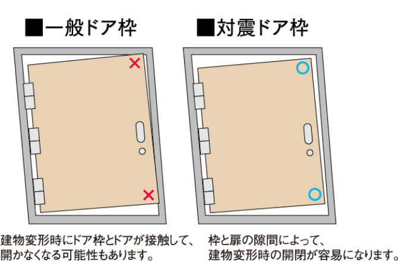

-
エレベーター安全装置
エレベーター運転中に、地震管制装置が一定値を超えた地震の初期微動（Ｐ波）・主要動（S波）を感知すると、最寄階に速やかに停止します。また、停電した際には一旦停止後、停電時自動着床装置により最寄階に自動停止し、さらに天井の停電灯が点灯してエレベーター内を照らす他、インターホンが使用できるので外部との連絡も可能です。
※エレベーター運転中に急速な大きい地震により主要動（S波）［高］を感知した場合は、その瞬間に直ちに休止し、最寄階への移動をしない場合や扉が開かない場合がございます。
※非常用エレベーターは停電時、一旦停止後、最寄階に自動停止。非常用発電機が作動し通常の運転に戻ります。（概念図）
初期微動を感知することにより、より迅速な対応を可能とします。非常用エレベーターのみとなります。
-
防災備品
地震などの非常時に備え、防災備品をご用意しました。初期共助に使用する小型拡声器、救助用工具セット、救助用ロープ、スコップ、防塵マスクなどを備えています。また、災害時のライフサポート備品として救急箱、非常用ロウソク、災害保存用飲料水、災害用簡易トイレなども備えています。

（参考写真）
（参考写真）
-
非常用発電機
地震などの災害時に万一停電しても、共用部の一部設備、非常用エレベーター、共用部照明の一部、共用部オートドアの一部、住戸への給水などを約48時間稼動させるため、非常用発電機から電力を供給します。（法規制4時間含む）
※被災の状況により電力を供給できない場合があります。
※稼動時間は燃料満載時前提です。また使用状況により稼動時間が変わる場合があります。
※火災信号が入った場合には、法的な防災設備の稼動が優先されます。 -
防災用井戸（予定※1）
災害時に水道や電気などのライフラインが停止しても、非常用マンホールトイレ洗浄水を確保できる防災用の井戸を敷地内に設置する予定です（※1）。
※1.掘削状況により計画を中止・変更する場合があります。くわしくは係員にお尋ねくだい。※飲料水としては使用できません。※被災の状況により水が使えない場合があります。 -
災害時の給水対策
1階共用部の共用トイレへは水道本管から給水ポンプを経由せずに給水しているので、万一の停電で給水ポンプが停止しても、水を使うことができます。
※被災の状況により水が使えない場合があります。 -
防火水槽
万一の火災に備えて、消防隊の迅速な消火活動をバックアップするために、敷地外構の地中に約40tの水を貯めることができる防火水槽を設置しています。
-
防災リュック
地震などの非常時に役立つグッズをまとめた防災リュックをお引渡し時に各住戸へお渡しします。
※飲料水や食品等は含まれておりません。詳細は係員にお尋ねください。 -
オートドアガラス
災害時などに安全に避難できるようエントランス、41階エレベーターホールのオートドアには、強化ガラスを採用しました。
-
屋内消火栓
火災が発生した時、初期消火を行うことができる屋内消火栓が共用部の各所に設置されています。
※スプリンクラー設置階は除く。 -
非常用マンホールトイレ
災害時に敷地内の特定のマンホールのフタを外して簡易トイレ（非常用マンホールトイレ）を設置するだけですぐに利用できます。
-
ガス漏れ検知器
万一ガス漏れが発生した場合は、ガス漏れ検知器が作動。当該住戸内のインターホン（親機）と玄関前インターホン（子機）より警報音が鳴り、室内外に異常をお知らせするとともに、警備会社および住友不動産建物サービス設備管理センターへ自動通報されます。
（参考写真）
-
火災感知器
万一火災などが発生した場合は、火災感知器が作動。住戸内インターホン（親機）と玄関前インターホン（子機）より警報が鳴り、室内外に異常をお知らせするとともに、警備会社、住友不動産建物サービス設備管理センターへ自動通報されます。
※11階以上はスプリンクラーと兼用となります。（参考写真）
-
対震ドア枠
万一の地震時に、玄関扉の枠が歪んでも、枠と扉の隙間を大きく設けることにより、扉の開放を容易にできるように配慮した対震ドア枠を採用しました。
（概念図）
-
（参考写真）
-
（参考写真）
-
（概念図）
-
バルコニー避難ハッチ
災害発生時、バルコニーを通って下階に降りられるよう各階バルコニーの必要箇所に避難ハッチを設けました。避難ハッチのない住戸は、バルコニーの隔板を破って同一階で移動することにより、避難ハッチを利用することができます。
-
スプリンクラー
11階以上の住戸には、熱を感知すると自動的に散水する、スプリンクラーを設置し、迅速な初期消火への対応を実現します。
-
耐震ラッチ
キッチンの吊戸棚、洗面化粧台の三面鏡収納の扉には、地震の揺れによって扉が開いて、収納物が落下しないように、耐震ラッチを設置。住まう方の安全に配慮しています。
-
家具固定用下地補強
万一の地震時による家具転倒予防として、キッチンの一部の間仕切壁などに家具固定用下地補強を施しました。壁面の一部分にある下地補強に家具を固定することで家具が倒れにくくなり、住まう方の安全に配慮された仕様です。
※住戸タイプにより洋室にも設置される場合があります。また、設置箇所は異なります。詳細は係員にお尋ねください。※取付金具は別途お客様のご負担となります。（概念図）
（概念図）

（概念図）
（概念図）
-
ホーム保安灯
停電時にライトが自動点灯するホーム保安灯を採用しました。コンセントから簡単に取り外せるので、非常時の携帯電灯としても使用できます。さらに、周囲が暗くなると自動点灯するナイトライト機能も付いています。
※掲載の参考写真はメーカーカタログ等の参考写真であり、本物件のものではありません。
※設備・仕様はタイプにより異なります。